GPU 到底怎么跑 kernel？
chip → SM → CTA → warp → instruction pipeline。
GPU 怎么执行 · FA 为什么演进 · backward 为什么难 · 下一步怎么看
一套面向“记忆”和“第一次理解”的 FlashAttention high-level slides
chip → SM → CTA → warp → instruction pipeline。
launch、specialization、PTX、SASS、cycle。
ownership、tile、pipeline 跟着瓶颈变化。
五个 GEMM、更多 live state、multi-writer dQ。
硬件喜欢什么？我们应该怎样分析和 debug？
这是数学事实、官方架构、paper result、源码观察，还是推断？
方程、reduction axis、grid/block/warp 的语义。
pin revision、arch、dtype、shape、dispatch。
标出 paper 的 shape、GPU 和对比基线。
讲清还缺 SASS、profile 或目标 GPU 验证。
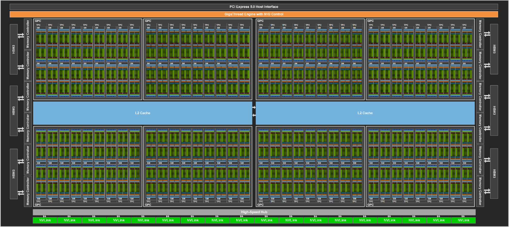
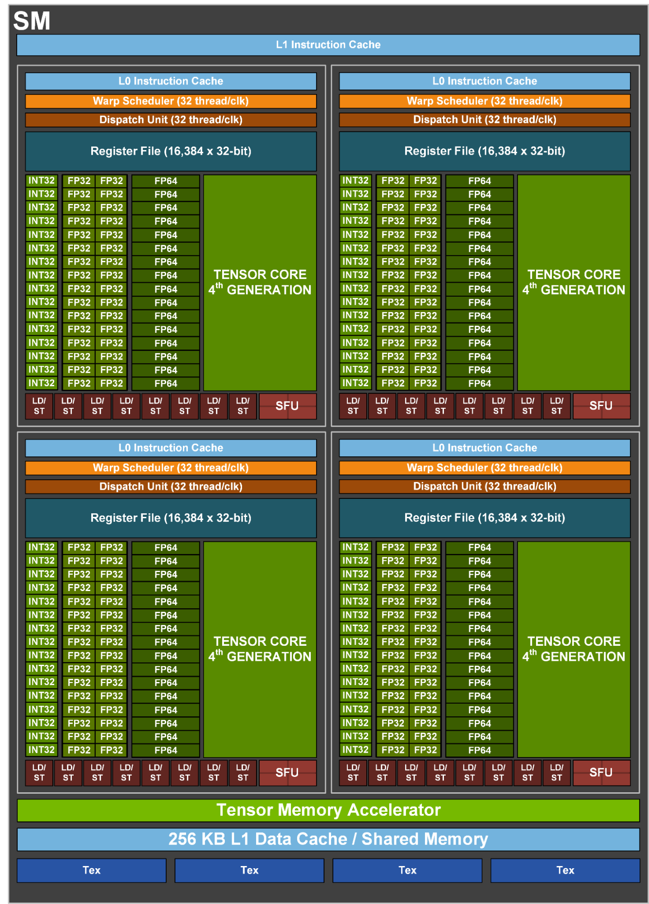
| ISSUE | scheduler / dispatch 从 resident warps 中选 ready instruction，送往匹配的执行路径；它们不完成矩阵乘本身。 |
|---|---|
| EXECUTE | 多类 pipeline 共存 Tensor Core 做 MMA；CUDA/MUFU 做算术与 exp；load-store/TMA 搬数据。独立 pipeline 提供 overlap 空间。 |
| STATE | register + L1/SMEM register 保存 thread-private state；SMEM allocation 属于 CTA，普通 CTA 不能直接读另一 CTA 的 allocation。 |
Forward：tile 内短暂生成 S/P；online softmax 只跨 K/V tiles 保留 m,l,O。
Backward：S′/P′ 是重算值，不是保存的 N×N tensor；mask、scale 与 dropout RNG 必须按 forward contract replay。
S/P/dP/dS 都是 N×N 语义矩阵；实现只让 tile 短暂存在 on chipFA3 paper · §2.1gridDim/blockDim 是 3-D 整数 shape；不是 SM id，也不是一个浮点 scalar| 坐标/参数 | 这个例子中代表什么 |
|---|---|
blockIdx.x=m | owner: Q/O rows [128m,128(m+1)) |
blockIdx.y | batch index；这里只有 0 |
blockIdx.z=h | 32 个 attention heads |
blockDim.x=128 | 一个 CTA 有 128 threads = 4 warps |
| dynamic SMEM | 每 CTA 的额外 shared allocation；影响 admission |
stream | 与同 stream 中其他 work 的 ordering domain |
kernel<<<64,128>>> 是合法 shorthand：分别等价于 (64,1,1) 与 (128,1,1)。S_ij 的矩形；只描述数学区域。
谁完成最终 O_i，跨哪些 j 保留 state。
线程与 SMEM 的协作和同步范围。
pending CTA 何时进入哪个 SM；persistent CTA 还可能连续拿多个 work item。
mathematical tile != logical work item != launched CTA != CTA lifetimeHigh-Level Tile Spec这只表示 resident-warp capacity。它不表示 18.75% 的 Tensor Core、MUFU 或 memory bandwidth 正在工作。
分析顺序：occupancy calculator 找 admission ceiling → profiler 看 achieved warps/stalls → pipeline counters 看实际利用率。
这是 conceptual skeleton；实际 FA3 source 用 warp/warpgroup ID、pipeline state 与 named/transaction barriers 实现。
整个 warp/warpgroup 走同一条 uniform branch；producer 不需要执行 consumer 的矩阵与 softmax loop。
mbarrier/pipeline state 表达“buffer 已填好”和“consumer 已释放”；SMEM lifetime 因此可证明。
setmaxnreg 可把 producer 不需要的 register budget 让给 consumer；但整个 CTA 仍共同 residency。
role 只规定“哪些 warp 发哪些指令、在什么 barrier 上交接”。它不把 TMA、Tensor Core、MUFU 或 CUDA Core 永久分给某组 warp。
warp → SMSP → Tensor Core 绑定接口。PTX 是 virtual ISA；SASS 才是目标 GPU 执行的 machine instruction stream。
register allocation、spill 与 static resource metadata 都属于具体 target artifact。下一页再看一段 FA3 SASS。
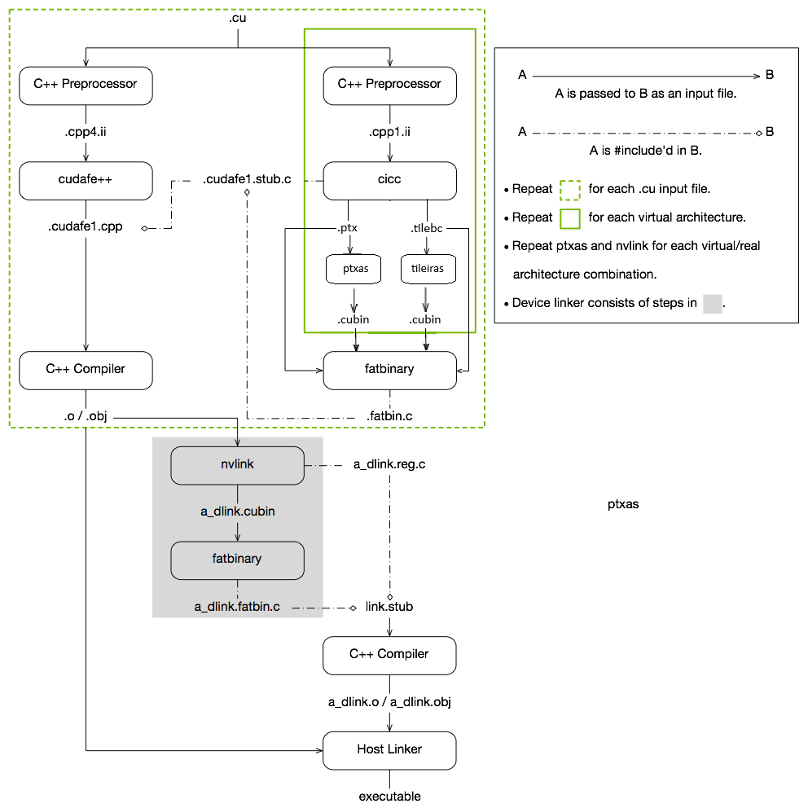
FA3 paper Appendix B.2 在 HGMMA 之间看到 MUFU / conversion / add，支持“WGMMA 与 softmax instructions 实际交错”的判断。
ptxas -v：register / spill / SMEM 摘要；cuobjdump --dump-sass：从 binary 抽 SASS；nvdisasm：更丰富的 disassembly / control flow。| resource path | paper cycles |
|---|---|
| 2 × MMA | 1024 |
| SMEM reads | 768 |
| EX2 | 1024 |
如果三条路径理想重叠，下界看 max，不是简单相加。真实时间还包含 fill/drain、barrier、occupancy、tail、cache 与不完美 overlap。
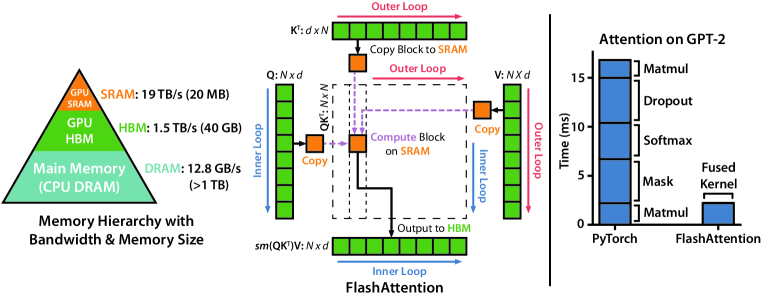
数学没变；dataflow 变了。
(m,l,O) 压缩已经看过的 score history；(a+b)+c ≠ a+(b+c)，所以 bits 可变化。dK_J,dV_J；many CTA J → partials of one dQ_I。更多 sequence parallelism；inter-CTA combine order 不固定。
bitwise order 可见；但当 B×H 不足以填满 GPU 时会失去大量并行度。
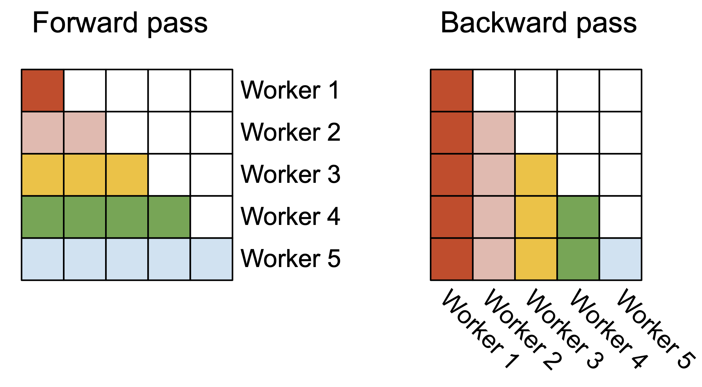
FA2 可能让不同 Q owners 重复读取 K/V，但换来更多 Q-sequence CTAs、较少 partial-state traffic 和更自然的 final-output ownership。
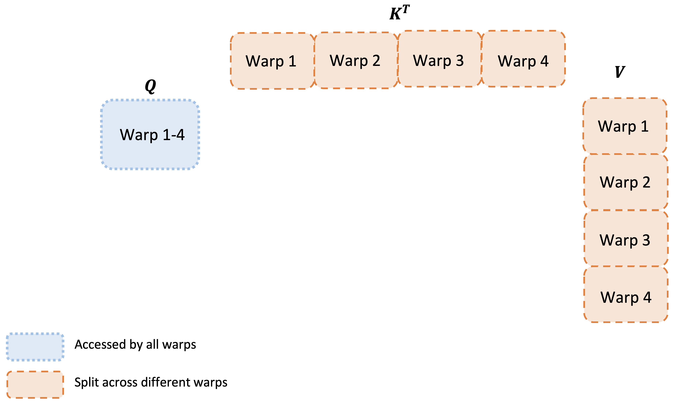
warps 切 PV 的 reduction axis，都会产生同一 O rows 的 partial；CTA 内必须做 floating-point sum。
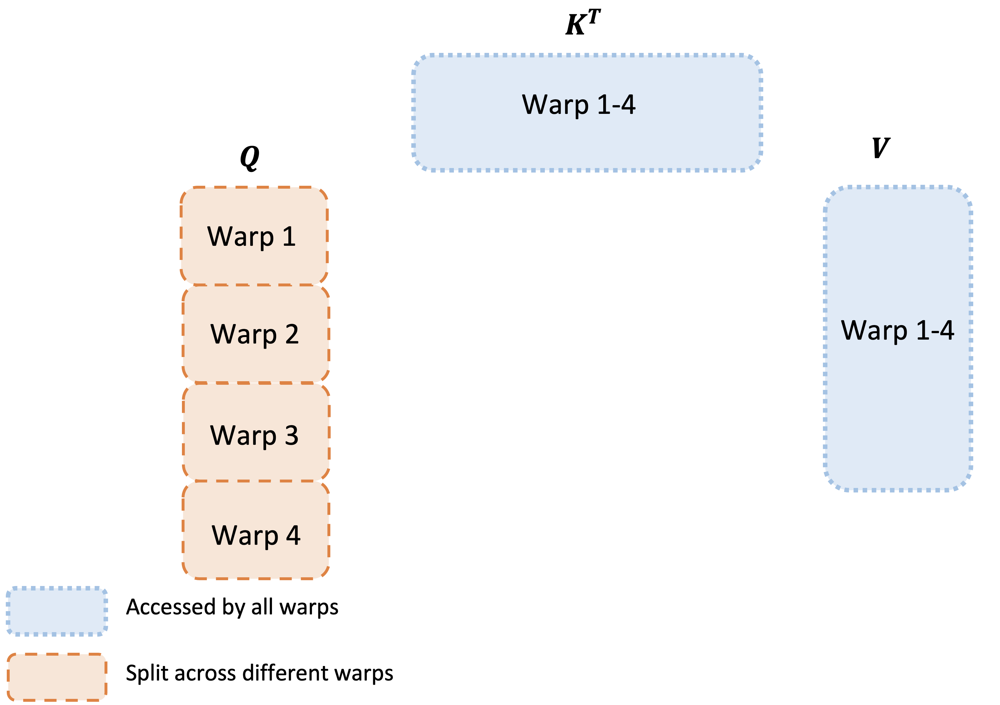
warps 切 Q/output rows，每个 warp 得到 disjoint O rows；最终直接 store/拼接，不做 cross-warp numeric combine。
| A100 · Ampere | H100 · Hopper | B200 · Blackwell | |
|---|---|---|---|
| Tensor Core | 3rd gen | 4th gen | 5th gen |
| MMA interface | warp mma.sync | warpgroup wgmma | fully async tcgen05 |
| accumulator | RMEM | RMEM | TMEM |
| movement | cp.async; threads generate addresses | TMA descriptor + transaction barrier | TMA + TMEM handoff; eligible 2-CTA modes |
| cooperation | ordinary CTA | cluster + DSMEM | 1-/2-CTA MMA + DSMEM |
| FA response | FA2 ownership + software pipeline | FA3 warp specialization | FA4 deeper role / lifetime co-design |

WG1 进入低吞吐 softmax 时，WG2 优先发 GEMM work。
随后角色交换；目标是让 Tensor Core 与 MUFU/CUDA paths 同时有 work。
bar.sync 影响 issue order；不传 O partial，也不把某个 WG 绑定到 Tensor Core。
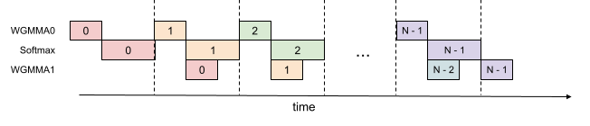
同一 tile 内必须 QK_j → softmax_j → PV_j，不能凭空 overlap。
先发 QK(j) 与 PV(j−1)；等待点之间穿插 softmax。
多保存一个 S_next fragment：更高 register pressure 与 compiler-scheduling 风险。

两个 consumer WGs 各自拥有 register-resident S/P/O，轮流执行 GEMM bundle 与 softmax。
一个 MMA issuer 驱动 high/low Q streams；TMEM 在 MMA、两个 softmax WGs 与 PV 之间交接 S/P/O。
output correction 单独成组；partial exp 与 conditional rescale 缩短非-MMA critical path，暴露更多可独立执行的 work。
| generation | score tile | logical owner | representative physical lowering | 为什么 |
|---|---|---|---|---|
| FA2 SM80 d128 | 128×64 | one Q/O tile | 4 split-Q warps；scan K/V | natural ownership + less partial communication |
| FA3 SM90 causal d128 | 128×128 | one logical Q/O tile | TMA producer + two 64-row consumer WGs；persistent CTA | larger step + async overlap |
| FA4 SM100 d128 family | 128×128 subtile | one owner per final row | two Q streams + TMEM roles；eligible 2-CTA group | deeper handoff under asymmetric scaling |
B_M×B_N×D| generation | local owner / schedule | on-chip state | partial dQ publication |
|---|---|---|---|
| FA1 | K/V owner scans small Q tiles | 8-way partial-dQ SMEM combine；152 KiB representative | serial handoff or scalar FP32 atomic |
| FA2 | larger K/V owner; output-wise warp partition | larger Q/dO/P/dS staging；144 KiB representative | scalar FP32 atomic in initial path |
| FA3 | five WGMMA graph + specialized writer | TMA circular stages + RMEM accumulators | TMA bulk reduce-add; optional ordered writer |
| FA4 | cross-iteration five-MMA graph; eligible 2-CTA group | TMEM aliasing + DSMEM exchange | bulk reduce-add; 2-CTA fewer updates; optional order |
dK/dV tile；同一个 dQ tile 仍然需要多个 K/V owners 的 partial contributions。两个矩阵乘；最终 O 有单 owner。
五个矩阵乘；dK/dV 长寿命 accumulate；dQ 还要跨 owners publish/combine。

五个 MMA、P/dS elementwise work，以及跨 iteration 的依赖。
1-CTA d128：MMA 2560 cycles，SMEM traffic 3328 cycles。
TMEM lifetime aliasing + deeper pipeline；但 movement 仍决定上限。

每 CTA 只 stage 一半 B tile；cluster 共同形成物理工作组。
通过 DSMEM 重排 dS，减少 SMEM pressure，并各算本地 dQ。
global reduce-add 次数减半；代价是 cluster admission、barrier 与 tail balance。
| boundary | fast path | deterministic mechanism | price |
|---|---|---|---|
| initial FA2 v2.0.0 | shared FP32 dq + atomics | 没有 public deterministic switch | — |
| later legacy FA2 | one shared FP32 dq image | nsplits private FP32 images + fixed split-index reduce | workspace + global traffic |
| early FA3 | TMA bulk reduce-add | global semaphore prescribes writer rank | wait / release / backpressure |
| FA4 SM100 family | async bulk FP32 reduce-add | acquire → reduce → visibility completion → release | wait / fence / head-of-line risk |
r 等待 counter==r；publish 完全可见后才允许 writer r+1。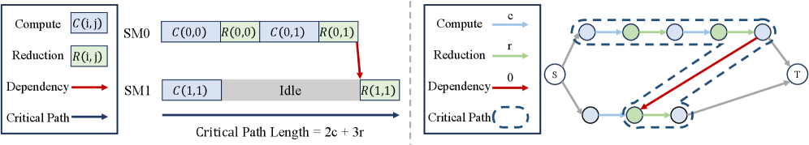
确定性的 reduction order 不变；改变的是 partial 何时 ready。
descending-Q + shift schedules 缩短 critical path，错开 publication。
baseline up to −37.9%；DASH recovery up to 1.28×。
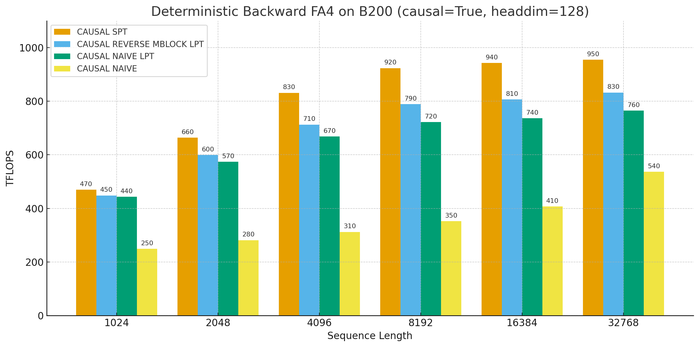
| label | 这里具体是什么意思 |
|---|---|
| causal | Q tile 只访问对角线之前的 K/V；不同 tiles 的 loop length 呈三角形。 |
| persistent CTA | 一个 resident CTA 连续领取多个 logical work items；不是 deterministic mechanism。 |
| LPT | longest processing time first：长 tile 先发，降低最终 straggler tail。 |
| SPT-style writer order | shortest processing time first：让较早 ready 的 dQ partial 更早进入固定 writer chain，减少 semaphore 堵塞。 |
| swizzle | 重排 batch/head/tile assignment，改善 locality 或错开冲突；不改变数学。 |
d_v=512？d_qk=576,d_v=512）。下面两页只解剖 official FA3 d_qk=64,d_v=512 实现，不冒充 Gemma 4 的 512/512 canonical schedule。P 跟着各自的 row owner；两个 WG 不需要交换一个共享的 probability tile。
O 先撞 RMEM 硬上限，V 同时压 SMEM| wide-V staging | logical bytes |
|---|---|
V[64,512] BF16 | 64 KiB / stage |
| two V stages | 128 KiB before Q/K/P/barriers |
所以不是只把 B_M 调小就结束：必须同时改 accumulator ownership、tile/stage 与 P 的 residence。
ptxas report；SMEM 128 KiB 也不等于单独超过 H100 227 KiB/CTANVIDIA Hopper limits · vLLM 512 merge · upstream discussion · SGLang sparse MLAB_M=64 + 按 O columns 切 WG；P 变成 SMEM handoffB_M=64 本身还不够：如果一个 WG 仍持有 O[64,512]，还是 256 FP32 accumulator/thread。当前 path 让两个 WG 看同一组 64 Q rows，但分别持有 256 个 output columns；因而它们必须共用同一个 P[64,64]。不持有 O；负责让 SMEM stage ready。一个 BF16 V stage 的 logical payload 是 64 KiB。
owner：O[:,0:256] = 64 KiB logical FP32 = 平均 128 accumulator/thread。
owner：O[:,256:512]。不读 Q/K、不重算 S/P；两半最后 disjoint store / concat，不相加。
P[64,64] 与 online-softmax scales 从 WG1 经 SMEM + PFull/PEmpty 交给 WG2；WGMMA 的稳定教学粒度是 128-thread WG，不是四个连续 16-row warpofficial WG dispatch · PV-only WGd_qk=64：它是真正的 d_qk=d_v=51264/512 path 讲清“为什么必须改 owner graph”；这一页再回到 Gemma 4，只讲 downstream 代码已经证明的事，不把 open PR 画成已 settle 的 per-WG schedule。K=V 表示复用 projection weights，不是把 QK reduction width 变成 64。
vLLM fork 导入 upstream PR 2422 的两个 commits，并已合入 Gemma 4 / H200 的 SM90+FA4 serving path。
atom_layout_n=2 同时用于 QK 与 PV；K=512 不一致。足够 independent owners；K/V/P reuse；少 ragged tail。
transient S/P on-chip；accumulator 不 spill；buffer 可安全 alias。
movement、MMA、softmax 在 barrier 定义的 handoff 中 overlap。
unordered reduction、atomics、semaphore chain、global workspace。
causal/varlen/sparse imbalance、tiny tiles、metadata-heavy decode。
training fwd、bwd、prefill、decode 会压不同资源；必须 resolve path。
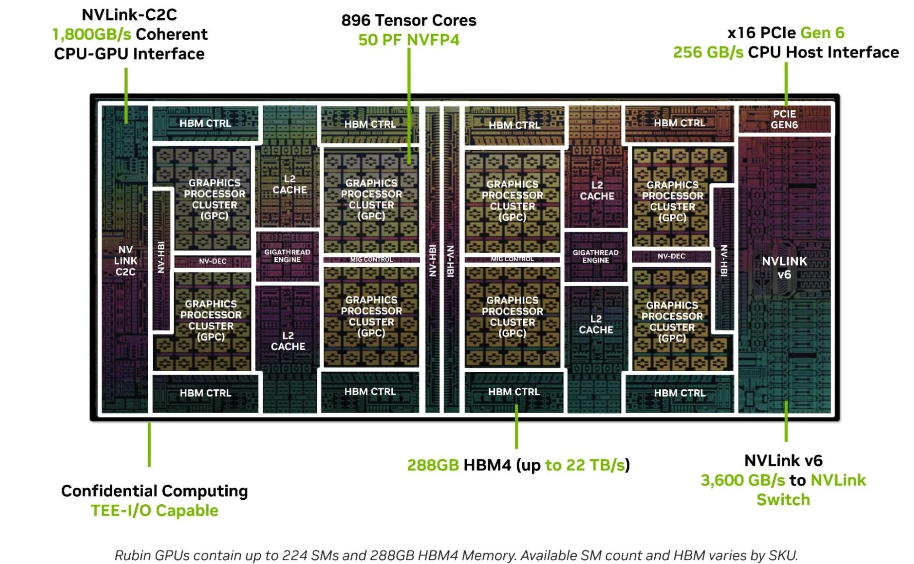
| H100 SXM5 | B200 | Rubin public max | |
|---|---|---|---|
| SMs | 132 | 148 | 224 |
| HBM | 80 GB HBM3 | 180 GB HBM3e | up to 288 GB HBM4 |
| peak BW | 3.35 TB/s | about 8 TB/s | 22 TB/s |
| Attention-facing change | WGMMA + TMA；RMEM accum | tcgen05 + TMEM；1-/2-CTA | faster EX2；enhanced TMA；finer triggers |
数学、mask、RNG、precision、backward。
谁完成 final output？谁只产生 partial？
值在哪里、活多久、何时能 reuse storage？
依赖、overlap、barrier、imbalance、deadlock。
RMEM/SMEM/TMEM、bandwidth、pipelines、occupancy。
dispatch、compiler、SASS、driver、architecture。
| 问题 | 工具 | 看什么 |
|---|---|---|
| 实际 launch 了谁？gap 在 CPU、memcpy 还是 kernel？ | Nsight Systems | CPU/GPU timeline、launch、stream overlap |
| kernel 被什么资源限制？ | Nsight Compute | roofline、occupancy、Scheduler/Warp State、memory、source counters |
| compiler 真的发了什么？ | ptxas / cuobjdump / nvdisasm | register、spill、SMEM、SASS、wait/barrier、instruction mix |
| memory / SMEM race / barrier 合法吗？ | Compute Sanitizer | memcheck、initcheck、racecheck、synccheck |
| 数学与边界正确吗？ | reference + adversarial tests | tiny shapes、tails、causal/varlen、FP64 oracle、grad checks |
| bits 会重复吗？deadlock 在哪？ | repeat hashes + tiny instrumentation | fixed artifact/RNG/stream；assert/counter/printf/cuda-gdb |
Grid creates CTAs. SMs host CTAs.
Schedulers issue ready warps.
Pipelines do the work.
FA1 tile · FA2 own · FA3 pipeline · FA4 decouple + deepen
Backward = five GEMMs + multi-writer dQ.
Determinism = fixed combine order; scheduling decides the price.
Large d: more matrix work per score, but wider live state. Rubin: re-measure before renaming.